Using VS Code
VSCode（Visual Studio Code）
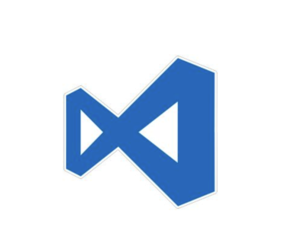
Official website: https://code.visualstudio.com/
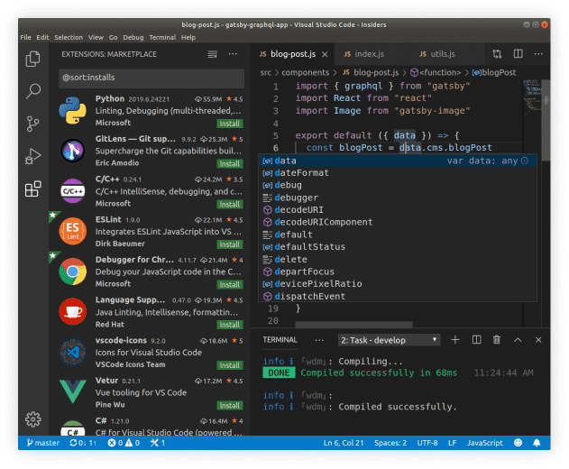
Visual Studio Code is a lightweight but powerful source code editor which runs on your desktop and is available for Windows, macOS and Linux. It comes with built-in support for JavaScript, TypeScript and Node.js and has a rich ecosystem of extensions for other languages (such as C++, C#, Java, Python, PHP, Go) and runtimes (such as .NET and Unity).
Although it is just an editor, it excels in its simplicity and fast startup speed. With the support of various plug-ins, it is equivalent to a small IDE, giving people a refreshing feeling. The disadvantage is that it can only open one project at a time.
1 installation
Download address: https://code.visualstudio.com/#alt-downloads
Versions for various platforms are provided for windows (32/64, zip), mac, and Linux (deb/rpm/tar.gz), and they are free, unlike Microsoft's style. Under Windows, change Cmd in the following shortcut keys to Ctrl.
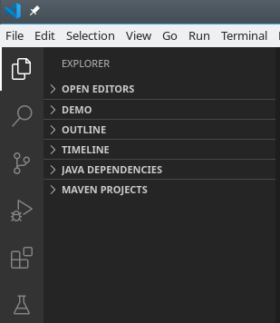
After installation, open the plug-in on the left (Cmd+Shift+X) to start installing the plug-in
Universal plug-in
vscode-icons (modify the icon of the directory tree on the left)
Vim (vi editor)
Vimacs (add emacs shortcut keys in vi input mode)
Markdown All in One (markdown editor)
TODO Highlight (todo highlight)
Bracket Pair Colorizer (different bracket pairs are distinguished by different colors)
Setting Sync (save your vscode configuration to github, configure in one place, all synchronized)
Develop plug-ins
Code Runner (code execution, right-click on the code fragment or file to run code)
Git Extension Pack (git package, including: Git History / Project Manager / GitLens / gitignore / Open in GitHub...)
MySQL (connect to MySQL database and query)
Language plugin
Python Extension Pack (python package, including: Python / Visual Code IntelliCode / MagicPython / Django / Jinja)
Java Extension Pack (java package, including: Language Support for Java / Debugger for Java / Java Test Runner / Maven for Java / Java Dependency View / Visual Studio IntelliCode) / Lombok
Scala Syntax / Scala Language Server
...
The above plug-ins are quite easy to use. For example, GitLens can display all submission history in the code.
Configuration and directory introduction
The user configuration in vscode is located at
- Windows
%APPDATA%\Code\User\settings.json - macOS
$HOME/Library/Application Support/Code/User/settings.json - Linux
$HOME/.config/Code/User/settings.json
- $HOME/.vscode
2. Use
Open the command palette (Cmd+Shift+P)
Directory tree on the left (Cmd+Shift+E)
Find Left (Cmd+Shift+F)
Run left (Cmd+Shift+D)
Left plugin (Cmd+Shift+X)
Git on the left (Ctrl+Shift+G)
Open terminal (Ctrl+`)
Open file (Cmd+P)
Open directory (Cmd+O)
Collapse the entire directory tree (Cmd+Shift+Up)
Collapse and expand a single directory (Left / Right)
Some scenarios: For case conversion, select text, open the command panel, enter transform, and you can choose to convert to uppercase or lowercase from the command prompt.
1 Java
Official tutorial: https://code.visualstudio.com/docs/languages/java
Configure the java environment: Set environment variables in /etc/profile: JAVA_HOME and PATH. After the settings are completed, restart vscode.
1.1 Demo version (Hello World)
write
Create new file (Cmd+N)
Save the file as HelloWorld.java (Cmd+S)
Write a program (smart prompt)
Enter class
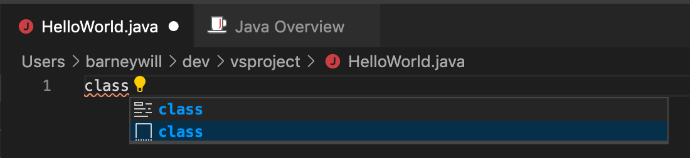
After carriage return
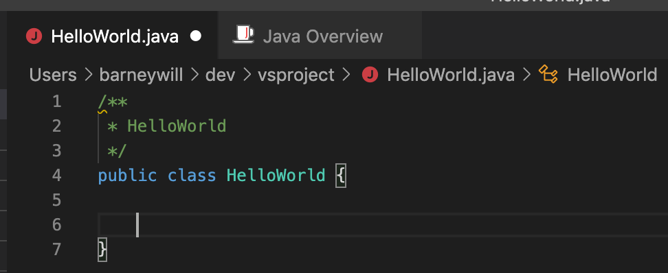
Enter main
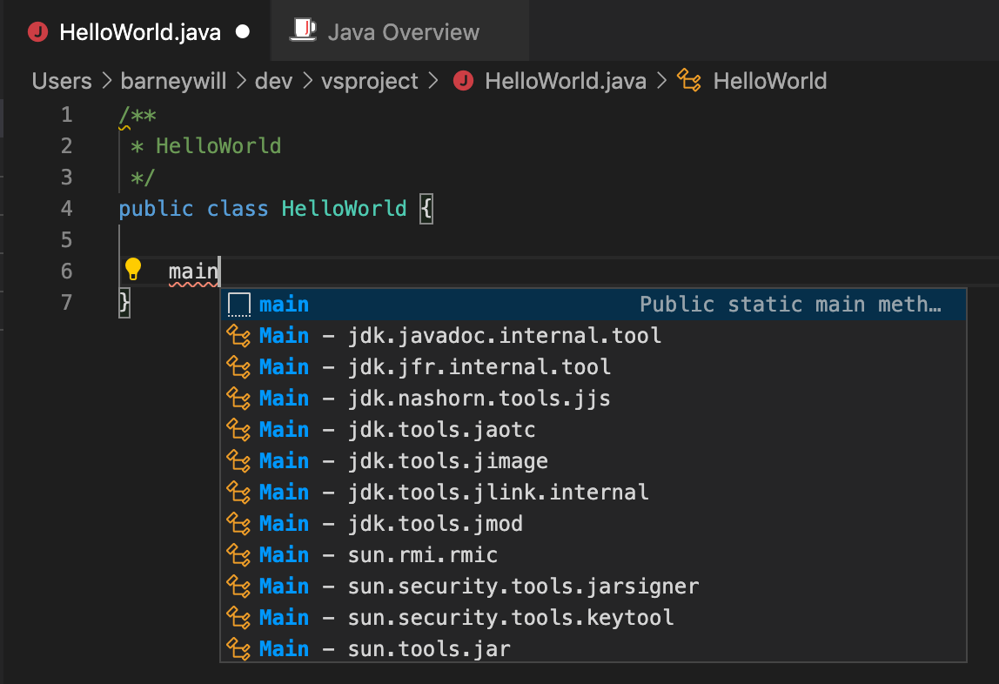
After carriage return
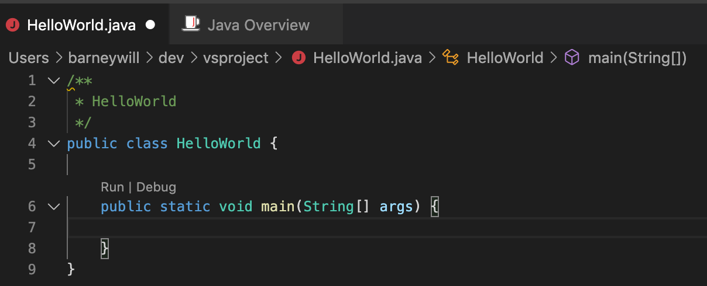
Enter sysout
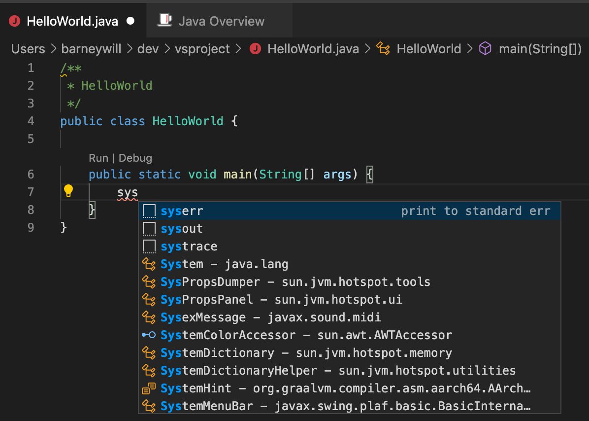
After carriage return
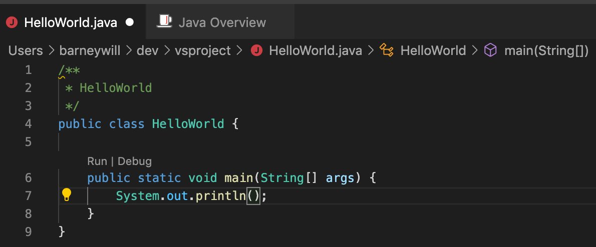
There is a prompt after hovering the mouse
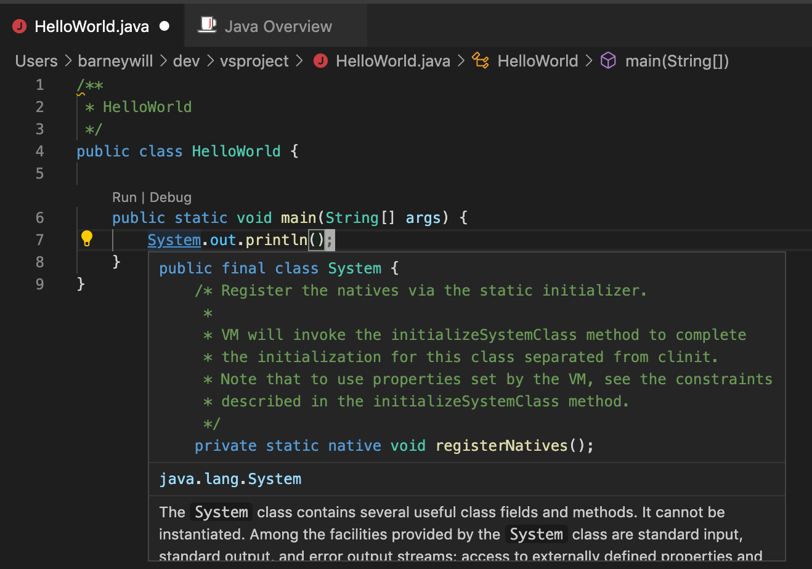
The experience is quite good.
other:
- You can view the class structure from the Explorer-outline on the left
- You can view the calling hierarchy from References on the left
- Search globally from Search on the left
- All test cases can be found from Test on the left
- From the GitLens on the left, you can view all git-related records of the current file
run
- Click Run on the main function
- Right-click on the class name and Run Code (Ctrl+Opt+N)
- Enter Run (Cmd+Shift+D) on the left and click Run and Debug
- Enter the menu Run-Run Debugging (F5)
1.2 Maven version
Install maven
Open the command palette (Cmd+Shift+P)
Enter java
Choose Java: Create Java Project
Choose Maven
Select archetype:archetype-quickstart-jdk8
You can quickly execute commands through the maven window
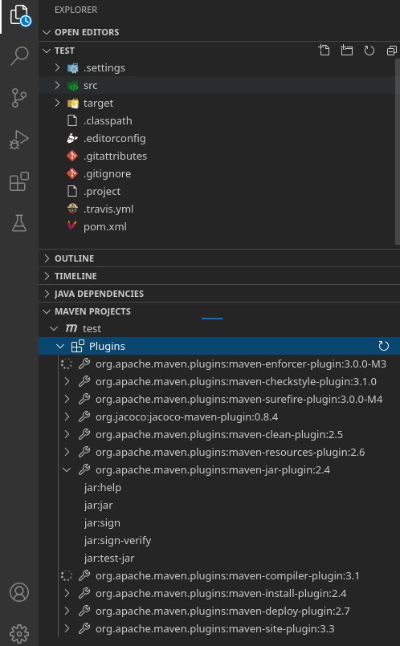
You can also execute the mvn command through the terminal
mvn clean package - DskipTests=true
1.3 Import Maven project
Open folder (Cmd+K Cmd+D)
Select an existing project directory
Finish
2 Scala
Install scala environment and add SCALA_HOME and PATH environment variables in /etc/profile.
Create a new HelloWorld.scala and write
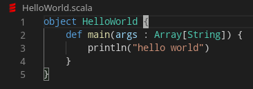
run
Right-click on the directory tree file and run code (Ctrl+Opt+N)
ps: Scala currently does not find a way to run unit tests.
3 Python
Install python environment
Create a new HelloWorld.py and write
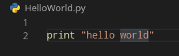
run
Right-click on the file tree file and run code (Ctrl+Opt+N)
4 Shell
Create a new testsh and write
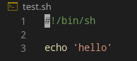
Right-click on the file tree file and run code (Ctrl+Opt+N)